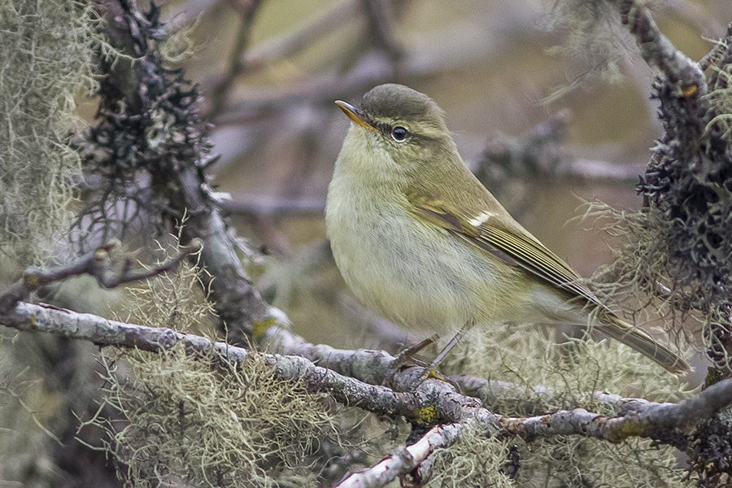

ग्रीनिश वार्बलरGreenish Warbler
Phylloscopus trochiloides · Phylloscopidae · BRD-0179

- Scientific name वैज्ञानिक नाम
- Phylloscopus trochiloides (Sundevall, 1837)
- Family कुल
- Phylloscopidae
- Hindi हिंदी
- ग्रीनिश वार्बलर
- Local names स्थानीय नाम
- greenish warbler, warbler
- Status here यहाँ की स्थिति
- native
- Movement आवागमन
- Winter visitor
- Known from कहाँ दर्ज
- Others have published records from the Basti–Ayodhya districts बस्ती–अयोध्या के ज़िलों से दूसरों के प्रकाशित अभिलेख
- IUCN IUCN
- LC
- Review समीक्षा
- audited and independently read
When to look कब देखें
Winter visitor शीतकालीन प्रवासी. Expected mainly in October, November, December, January, February, March. मुख्यतः अक्टूबर, नवंबर, दिसंबर, जनवरी, फ़रवरी, मार्च में अपेक्षित।
Arrives September–October from breeding grounds in Central Asia and western Himalayas; departs March–April. Expected in woodland canopy throughout the region. All migrants and visitors →
Uses and possibilities उपयोग और संभावनाएँ
Drawn from the documented uses in the profile below, where each is labelled traditional, current or a research lead. All uses →
Tell it apart from इनसे अलग पहचानें
ग्रीनिश वार्बलर / Greenish Warbler
Phylloscopus trochiloides (Sundevall, 1837) — Phylloscopidae
ग्रीनिश वार्बलर — पूर्वी उत्तर प्रदेश में अक्टूबर से मार्च तक मध्य एशिया और पश्चिमी हिमालय से आने वाली एक छोटी, सक्रिय और अति चंचल चिड़िया, जो ऊँचे पेड़ों की पत्तियों में छिपी हुई कीटें खाती है। इसका सबसे विशिष्ट लक्षण इसकी पाँचवीं प्राथमिक पंख (primary feather) के किनारे पर सफ़ेद धब्बा (white wing-bar) होना है। यह चिड़िया कभी एक पल भी शांत नहीं बैठती — हमेशा गतिविधि में रहती है। इसकी आवाज़ "चि-चि-चि" जैसी होती है।
Quick Identification त्वरित पहचान
| Feature | Description |
|---|---|
| Size | Small leaf warbler; 10–11 cm long |
| Plumage | Greenish-olive above; pale whitish below |
| Wing-bar | Pale/white wing-bar on primaries (diagnostic) |
| Bill | Small, pointed; pale below |
| Legs | Pale yellowish |
| Behaviour | Constantly active; gleaning from leaves and twigs |
| Call | Repeated sharp chi or chi-chi-chi |
Field tip: A tiny green warbler in winter woodland canopy, constantly flitting about. Look for the pale wing-bar (fifth primary). Pale supercilium. Actively gleans insects. Always on the move; frustratingly difficult to see well.
हिंदी — कैसे पहचानें:
बहुत छोटी हरी चिड़िया।
पंख पर सफ़ेद रेखा (wing-bar)।
"चि-चि-चि" करती है।
हमेशा चलती-फिरती है, पत्तियों में।
Morphology आकारिकी
Biometrics:
| Measurement | Range |
|---|---|
| Total length | 100–110 mm |
| Wing (folded) | 58–65 mm |
| Tail | 42–48 mm |
| Bill | 10–11 mm |
| Weight | 7–10 g |
Size: 10–11 cm long; one of the smallest warblers.
Plumage: Upperparts greenish-olive to olive-green. Crown concolorous with back. Rump slightly brighter yellow-green.
Underparts: Pale whitish or buff-white on throat and breast. Flanks washed olive-buff.
Wing-markings: Diagnostic pale or white mark on outer edge of fifth primary (visible in flight and sometimes at rest). This mark is the key field character separating it from similar species.
Eyebrow stripe: Pale buff supercilium visible in front of eye.
Bill: Small, pointed, blackish above with pale or yellowish lower mandible.
Legs and feet: Pale yellowish-grey; relatively long, suitable for clinging to vegetation.
Eyes: Dark; alert.
Sexes: Monomorphic (sexes similar).
Juveniles: Slightly duller than adults; brighter yellow-green above.
Vocalisations. Call repertoire:
- Contact call: Repeated, sharp chi or chi-chi-chi, often given as bird moves through vegetation.
- Flight call: Higher-pitched si-si-si in flight.
- Song: Rapid, scratchy warble; less melodious than some warblers. Delivered in short bursts.
हिंदी: "चि-चि-चि" तेज़ आवाज़। गीत तेज़ और तेज़ी से। पक्षी आवाज़ निकालते हुए चलता है।
Behaviour & Ecology व्यवहार और पारिस्थितिकी
Active gleaner: Phylloscopus warblers are specialised for gleaning small insects from leaves, twigs, and branches. Diet includes:
- Small flies and gnats
- Small moths and lepidopteran larvae
- Spiders and spider eggs
- Other small arthropods
Feeding method: Restless gleaner; moves rapidly through foliage, picking insects from leaf undersides, branch surfaces, and dead leaves. Hangs acrobatically from twigs.
Feeding height: Primarily mid-storey and canopy; sometimes lower in mixed-species flocks.
Flock association: Often join mixed feeding flocks of other warblers and small passerines in winter.
Perching: Fidgety; rarely perches still for more than a few seconds.
Roosting: Roost within dense foliage; often solitary.
हिंदी: पत्तियों से कीटें निकाल कर खाता है। हमेशा गतिविधि में। दूसरी छोटी चिड़ियों के साथ झुंड में रहता है। कभी शांत नहीं बैठता।
Life Cycle / Phenology जीवन चक्र
Winter visitor: Absent during breeding season (April–August); returns to eastern UP from September and remains through March–April.
Arrival and departure: First birds arrive in September; numbers peak in November–January; departure peaks in March–April, with most birds gone by May.
Breeding: Breeds in Central Asia and western Himalayas (Himachal Pradesh, Jammu & Kashmir). No breeding in eastern UP.
Courtship and pairing: Pair bonding occurs on wintering grounds. Some birds return to same wintering sites annually.
Foraging: Activity level peaks with cool weather; foraging intensity increases as temperatures drop.
हिंदी: सर्दी में आता है। सितंबर में आना शुरू करता है, मार्च तक चला जाता है। मध्य एशिया में घोंसला बनाता है। हर साल एक ही जगह आता है।
Host Plants or Prey आहार
| Food Type | Examples | Feeding Behaviour |
|---|---|---|
| Small flies and gnats | Diptera species | Glean from leaves and twigs |
| Small moths and larvae | Lepidoptera larvae | Pick from vegetation surfaces |
| Spiders and eggs | Various spider species | Consume on vegetation |
| Other arthropods | Small beetles, parasitic wasps | Opportunistic gleaning |
हिंदी: छोटी कीटें खाता है। पत्तियों को पलट कर कीटें निकालता है। छोटे पतंगों के अंडे खाता है। मकड़ियाँ भी खाता है।
Predators / Natural Enemies शत्रु
- Avian predators: Shrikes, small eagles, hobby falcons
- At roost: Owls, snakes (rare in canopy roosts)
- Mammalian predators: Unlikely due to canopy habitat and small size
- Parasites: Avian parasites, blood parasites
हिंदी: बाज़ और श्रीके इसका शिकार कर सकते हैं। रात को उल्लू खतरा हो सकते हैं।
Agricultural / Human Relevance कृषि प्रासंगिकता
Pest control: Feeds on small insects including pest species; contributes to natural pest regulation.
Woodland health indicator: Presence indicates healthy deciduous woodland with adequate insect fauna.
Habitat dependence: Depends on retention of tree canopy and mid-storey vegetation. Deforestation and canopy clearance eliminate habitat.
Migration ecology: Part of Central Asian bird migration system; wintering in India; movements linked to monsoon and temperature patterns.
हिंदी: यह चिड़िया वन्यजीव अधिनियम 1972 की अंतर्गत संरक्षित है। छोटी कीटें खाती है, कृषि के लिए उपयोगी है।
Expected Locally स्थानीय रूप से अपेक्षित
Not a field record. Written from published accounts for eastern Uttar Pradesh. No confirmed local sighting yet — if you have seen it, that is what the atlas needs.
अभी तक स्थानीय पुष्टि नहीं। यह विवरण प्रकाशित स्रोतों से है, किसी अवलोकन से नहीं।
This species is NOT a field record. The distribution below is based on published sources describing where Greenish Warbler should be looked for in eastern Uttar Pradesh.
Range: Expected in woodland canopy and mixed deciduous forests throughout Basti–Ayodhya region during winter months.
Habitat preference: Tree canopy and mid-storey of deciduous and mixed-deciduous woodlands; gardens and orchards with established trees.
Seasonality: Winter visitor; present October to March; occasionally lingering into April in mild years.
Published records: GBIF holds published records from these districts.
What a first record would be: A dated photograph clearly showing the bird in canopy habitat, ideally showing the diagnostic white wing-bar, with GPS coordinates and date, submitted through the About page.
हिंदी: यह चिड़िया स्थानीय रूप से अपेक्षित है। पेड़ों की चोटी में सर्दियों में देखी जाती है। अक्टूबर आते ही दिखने लगती है।
Distribution वितरण
Global range: Central Asia, western Himalayas, and wintering grounds across India. Multiple subspecies and closely-related species across range.
In India: Widespread winter visitor to forested areas and gardens across northern and central India.
In Uttar Pradesh: Common winter visitor to wooded areas and gardens in northern and eastern districts.
In Basti district / eastern UP: Common winter visitor in woodland and gardens; likely abundant but easily overlooked due to small size and activity.
Research Questions शोध प्रश्न
- What is the specific origin of Greenish Warbler populations wintering in eastern UP — do they breed in particular parts of Central Asia or the Himalayas?
- Do individual birds show site fidelity, returning to the same wintering areas year after year?
- How does diet composition shift across the winter season in response to changing insect availability?
- क्या कीटनाशकों के उपयोग से इस चिड़िया के भोजन की उपलब्धता में कमी आई है?
- What are the primary habitat requirements for winter survival, and which tree species provide the most foraging opportunities?
- क्या शहरी विस्तार और पेड़ों की कटाई ने इस चिड़िया की संख्या को प्रभावित किया है?
Similar Species मिलती-जुलती प्रजातियाँ
| Species | Key Difference | Hindi | Field Rule | |
|---|---|---|---|---|
| [[humes_leaf_warbler\ | Hume's Leaf Warbler]] (Phylloscopus humei) | Similar but yellow wing-bar (not white); two wing-bars | ह्यूम वार्बलर | Hume's has yellow wing-bars; Greenish has white wing-bar on 5th primary only. |
| [[common_chiffchaff\ | Common Chiffchaff]] (Phylloscopus collybita) | Slightly larger; darker legs (not pale) | चिफ चाफ | Chiffchaff is slightly larger with dark legs. Greenish has pale legs and white wing-bar. |
| {{Dusky Warbler}} (Phylloscopus fuscatus) | Darker above; less green; different wintering range | \ | Dusky Warbler is darker and less greenish. |
Field rule: Greenish Warbler has a diagnostic white mark on the fifth primary feather. This is visible when the wing is extended or in flight. Hume's Warbler has two yellow wing-bars. Pale legs and small size confirm Greenish Warbler.
Taxonomy & Classification वर्गीकरण
Original description. Described by Carl Jacob Sundevall in 1837 in Nya Acta Regiae Societatis Scientiarum Upsaliensis ser. 3, vol. 12, p. 18, as Sylvia trochiloides. Type locality is Turkestan (Central Asia).
Subspecies. Multiple subspecies recognised:
- P. t. trochiloides Sundevall, 1837 — Central Asia and western Himalayas (winter visitor to India)
- P. t. plumbeitarsus Sushkin, 1925 — further east
Wintering populations in Uttar Pradesh likely belong to P. t. trochiloides.
Family and order placement. Order Passeriformes; family Phylloscopidae (leaf warblers). The genus Phylloscopus contains the leaf warblers of Asia, specialised for gleaning insects from foliage.
Phylogenetic notes. Closely related to other Phylloscopus species, particularly Common Chiffchaff and Hume's Leaf Warbler. Part of a widely-distributed genus of cold-tolerant warblers.
IUCN status rationale. Assessed as Least Concern (LC) globally. Populations remain widespread and stable across breeding and wintering ranges. Habitat changes are a potential long-term threat but are not currently causing significant declines.
हिंदी: यह चिड़िया मध्य एशिया में पाई जाती है। भारत में सर्दी में आती है। कानून से संरक्षित है।
Photo Gallery फोटो गैलरी
No photos yet — add field photos to media/species/greenish_warbler/ and run node scripts/sync_photos.js.
Wanted photos:
- Bird in canopy showing wing-bar
- Gleaning from leaves
- Close-up of head and diagnostic features
- In mixed feeding flock
- Perched on branch
References संदर्भ
- Sundevall, C. J. (1837). Nya Acta Regiae Societatis Scientiarum Upsaliensis, series 3, vol. 12, p. 18.
- Ali, S. & Ripley, S. D. (1972). Handbook of the Birds of India and Pakistan. Vol. 7 (Warblers to Redstarts). Oxford University Press, Delhi. Pp. 183–186.
- Cramp, S. (ed.) (1992). Handbook of the Birds of Europe, the Middle East and North Africa: The Birds of the Western Palearctic. Vol. 6 (Warblers). Oxford University Press. Pp. 426–445.
- Rasmussen, P. C. & Anderton, J. C. (2005). Birds of South Asia: The Ripley Guide. Smithsonian Institution, Washington. Vol. 2, pp. 426–445.
- IUCN Red List (2023). Phylloscopus trochiloides — BirdLife International assessment. IUCN, Cambridge. Status: Least Concern.
- GBIF Secretariat (2026). Phylloscopus trochiloides. GBIF Backbone Taxonomy. https://www.gbif.org/
Source file: species/fauna/birds/greenish_warbler.md